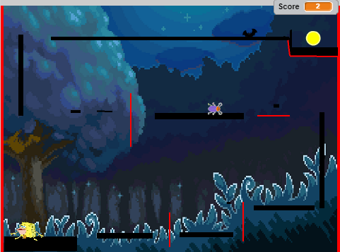

|
The code shown to the left is the code used for one character, SpongeGar, and is considered the 'easy' character, due to his larger jump height. |
|  | In our final project on scratch, my partner (Arturo Martinez) and I were tasked with producing a game or story, and we decided to produce a game where the player would choose a character, and navigate through levels to reach an end goal. |
|
The code shown to the left is the code used for one character, SpongeGar, and is considered the 'easy' character, due to his larger jump height. |
 |
What I learned while making this game was how to create a new algorithm. In this case it was used to hide sprities or other game assets in a corner, |